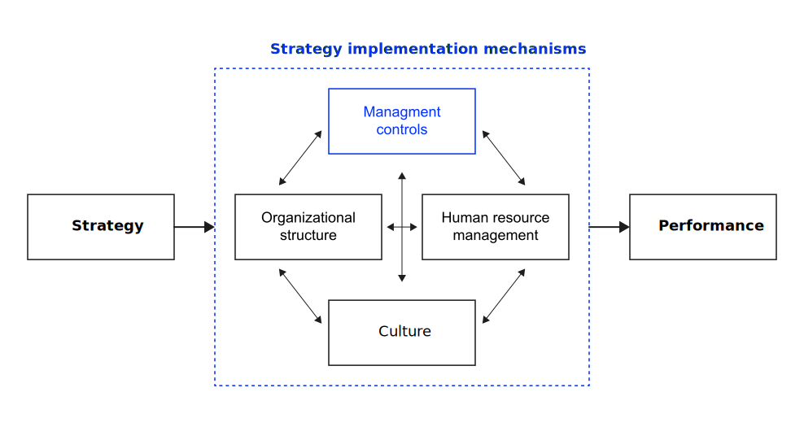

Performance Management
How to effectively evaluate strategic performance?
Neu-Ulm University of Applied Sciences
September 3, 2024
Learning outcomes
After this session, you should have a solid understanding of
- differences and relationships between strategic planning and implementation and control,
- the formal strategy and management control process according to the management control perspective,
- difficulties of accurately measure strategic performance,
- the planning hierarchies according to Mintzberg and their objectives and measures,
- the reasons that lead companies to set different priorities in their management and planning approach, and
- different performance measurement frameworks including their key differentiating characteristics.
Prologue
What gets measured gets managed — even when it’s pointless to measure and manage it, and even if it harms the purpose of the organisation to do so. Simon Caulkin, management editor of the Guardian summarizing Ridgway (1956)
Reflection
Form small groups and engage in a discussion of the findings from the reading by Chakravarthy (1986) on the measurement of strategic performance, addressing the following questions:
- What are the difficulties encountered when attempting to accurately measure strategic performance?
- Why are traditional financial metrics inadequate for capturing the strategic impact of various strategic initiatives and decisions?
- How can the quality of a firm’s adaptation be evaluated?
- How should strategic performance be evaluated in accordance with the findings of the study?
In addition, examine the most recent Annual Review of the NVIDIA cooperation and assess its financial performance, as well as its slack resources and uses.
Management control
Definition
Management control is the process by which managers influence other members of the organization to implement the organization’s strategies (Anthony & Govindarajan, 2014, p. 6)
What are examples for management control decisions?
Part of strategy implementation


The formal strategy and management control process


Planning hierarchies
Four hierarchies


Conventional strategic planning

Strategic planning as a “numbers game”

Capital budgeting as ad hoc control

Performance measurement frameworks
Overview
Du Pont Pyramid, Tableau du Bord, Balanced Scorecard, Performance Pyramid, and Performance Prism.
Group work
Form small groups of 3 to 4 students, take 15 minutes to do a research on one of the frameworks and to prepare a short presentation (5 minutes) that summarizes the key-tenets of the framework.
Prepare yourself to present your insights.
Conclusion
The frameworks reflect key ideas to today’s understanding of performance measurement system design:
- Inclusion of non-financial and financial metrics
- Creating a balanced set of multidimensional measures
- Identifying trade-offs between measures
- Include a mix of historical or lagged indicators and predictive measures
- Linking measures in terms of a cascading system and means-ends relationships
- Linking measures and targets with actions
- Inclusion of internal (e.g. costs, quality) and external perspectives (e.g. competitiveness)
- The integration of multiple stakeholders
- The dynamics of performance measurement systems over time (with changing priorities and strategic focus)
Review and consolidation
The following questions are designed to review and consolidate what you have learned and are a good starting point for preparing for the exam.
- Chakravarthy’s paper highlights the limitations of traditional financial metrics in measuring strategic performance. How can slack resources provide a more comprehensive understanding of a firm’s strategic health? Discuss with reference to the concepts of quality of transformations and stakeholder satisfaction.
- Consider a scenario where a firm is facing a significant market disruption. How can slack resources be leveraged to navigate this disruption effectively?
- Explain Mintzberg’s planning hierarchies and provide examples of how these hierarchies (may) manifest in organizational planning processes.
- Discuss the advantages and disadvantages of top-down versus bottom-up planning approaches according to Mintzberg. How can organizations effectively balance these approaches for strategic success?
- Compare and contrast the management control framework proposed by Anthony and Govindarajan with Mintzberg’s planning hierarchies. How do these frameworks complement or differ from each other?
- Identify and explain the key components of the management control framework. How can organizations use these components to enhance strategic performance management?
- Analyze the Du Pont Pyramid and its application in assessing return on investment (ROI). How does it contribute to understanding financial performance within an organization?
- Compare and contrast the Balanced Scorecard and the Tableau du Bord as strategic performance management frameworks. Discuss their strengths and weaknesses in different organizational contexts.
- Evaluate the significance of the Performance Prism in incorporating stakeholder perspectives in performance management. How does it enhance the overall understanding of organizational success?
Homework
Read Chen et al. (2010) and make notes on following questions:
- What are prominent conceptions of information systems strategy identified by the authors in the literature?
- How do these relate to the perspectivs on strategy as discussed earlier (see here)?
- How do the authors (re-)conceptualize information systems strategy?
- How might the concepts discussed in the paper be applied in real-world IT strategy formulation?